---
{
"layout": "note",
"title": "[Thermodynamics] Ch 7. Entropy Analysis for a C.V",
"journal": true,
"section": "Study",
"topic": "Thermodynamics",
"excerpt": "[Thermodynamics] Ch 7. Entropy Analysis for a C.V 이전 시간에 배웠듯이, 엔트로피 변화량은 열의 출입 + Generation term However, so far 일정한 질량의 system, 즉",
"classes": "wide",
"permalink": "/blog/mechanical-engineering/thermodynamics/thermodynamics-ch-7-entropy-analysis-for-a-cv/",
"study_area": "Mechanical",
"date": "2024-04-23",
"source_url": "https://jeffdissel.tistory.com/m/70",
"header": {
"teaser": "/blog/mechanical-engineering/thermodynamics/thermodynamics-ch-7-entropy-analysis-for-a-cv/images/img-001.png"
}
}
---
{% raw %}[Thermodynamics] Ch 7. Entropy Analysis for a C.V
이전 시간에 배웠듯이,
엔트로피 변화량은 열의 출입 + Generation term
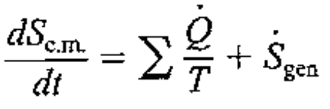
However, so far
일정한 질량의 system, 즉, Control mass에서만 계산
Ch1,2에서 언급했다 싶이,
유체역학, 열역학에서는
Control volume
을
가장 많이 사용한다. whY???
MASS의 입 출입이 존재할때,
질량유동과 같이 Property들의 흐름
도
계산 할 수 있기 때문이다.
실제 시스템 같은 경우 전부, Mass의 흐름이 존재하는 경우가 많다.
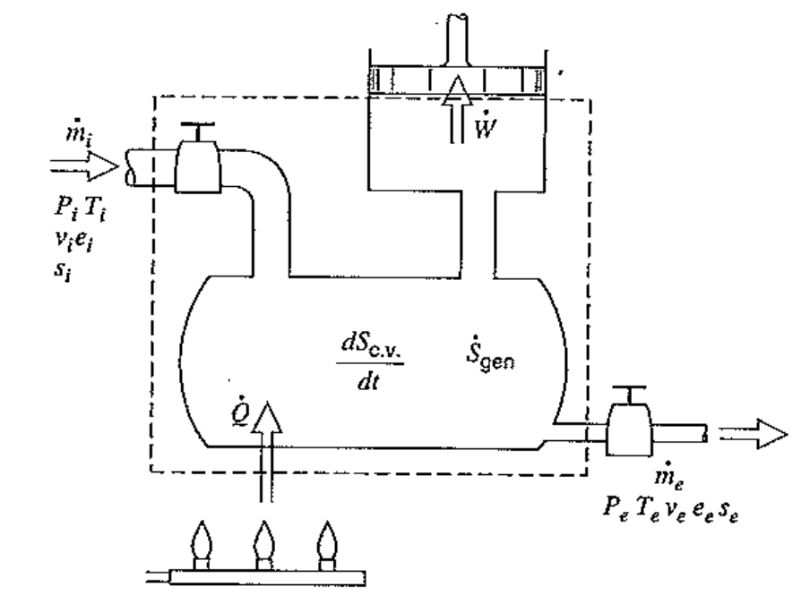
Control volume analysis의 경우, 기존 Control mass term에 입출입 term을 더 해주면 된다.
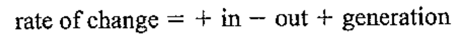
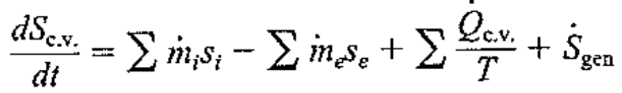
위 식을 Base로 항상 그랬듯이, 가정을 통해서 위식을 간략하게 요약할 수 있다.
1. Steady state process
dS_c.v./ dt = 0 이므로,
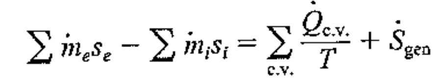
위 식을 Mass flow rate로 나누어 주면.
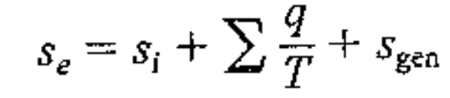
만약에 열 출입이 없고, Reversible process인 경우에는
se = si 임을 알 수 있다.
2. Transient Process
trasient process에서는, 시간에 따른 control volume property들이 일정하게 변하는 과정.
따라서,
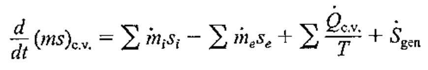
양변을 시간 0 -> t로 적분해주면,
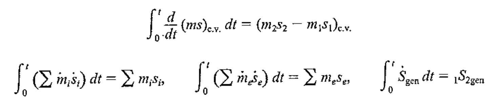
좌항 = 시간 t동안 c.v의 엔트로피 변화량
우항 = 시간 t동안 들어온 엔트로피 - 나간 엔트로피 + 생성된 엔트로피
대입해주면,
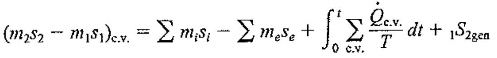
여기서 우항 3번째 식에서 온도 T는 C.V의 온도를 의미한다.
C.V의 온도가 시간이 흐르는 동안 일정하다고 가정하면,
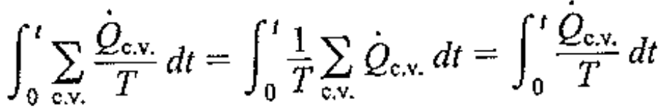
최종적으로, 다음과 같은 식이 유도된다.
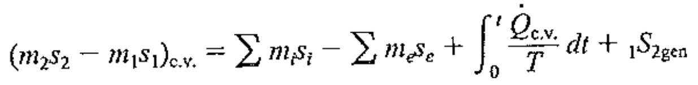
Reversible steady-state single flow process
이번에는 work term을 분석해보자.
먼저 Energy Equation에서, 단열이라고 가정하면 q = 0
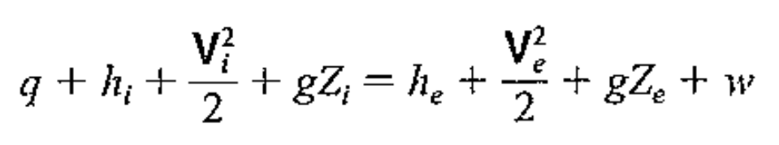
따라서, 일은
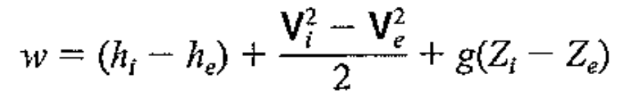
그리고 Reversible process 에서 ds = 0이므로,
Tds = 0 = dh - vdp 를 이용하면
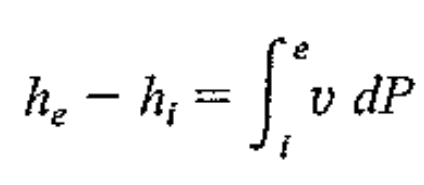
Therefore, the work term would be
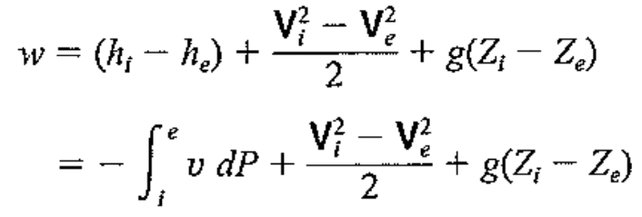
핵심적인 것은, 여기서 w는 shaft work이다. 즉, boundary work와 다른 개념이라는 것.
자세히 들여다보면, Specific volume(v)가 work에 굉장히 많은 영향을 끼친다.
가장 대표적인 예시가 바로 steam power plant
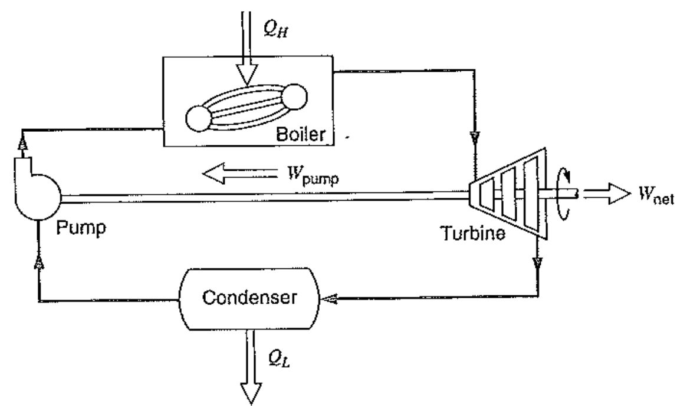
여기서 pump와 turbine에서의 압력변화는 일정하였다.
하지만, Pump의 경우 훨씬 낮은 specific volumed을 turbine보다 가지고 있다.
따라서, Shaft work 자체는 pump << Turbine이라는 것이다.
그렇기 때문에 외부에 일을하는 system을 만들 수 있는 것이다.
Incompressible flow work
실제로, Incompressible flow같은 경우 specific volume이 일정하기 때문에,
적분을 그대로 나오게 되고,
결과 베르누이 정리가 나오게 된다.
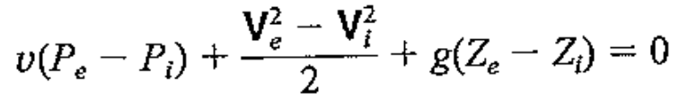
Boundary work vs shaft work
지금까지 잘생각해보면, 우리는 pump, turbine에서의 일 즉, shaftwork에 대해서 분석하였다.
하지만, 이전 chapther1,2,에서는 boundary work
w = integral(p) dv 만 계속해서 사용했었다.
도대체 둘이 차이가 뭘까?????
Bondary work는 말그대로, boundary가 하는 일이다.
일은 정의에 따라
힘과 그에 평행한 이동거리
가 존재하여야 한다.
여기서 Boundary work는 Control volume의 경계선이 확장되거나 수축될때.
즉, 이동거리가 존재할때 그에 상응하는 압력이 한 일이다.
따라서,
Work = integral (Pressure) dv
로 표현하는 이유이다.
사실 둘의 차이는 이 식이 어떻게 유도되었는지 확인해보면, 바로 알 수 있다.
https://jeffdissel.tistory.com/4
[Gas dynamics] Ch 2 - Control volume analysis - Application of Reynolds Transport Theorem
이제 Reynold's transport theorem 을 이용하여 B가 mass, linear momentum, Energy 인 경우로 나누어 해석해보자 1. B = m(mass), β=dB/dm = 1 System의 mass는 시간이 흘러도 일정하므로 (dm/dt) system = 0 이다. 따라서, 여기
jeffdissel.tistory.com
자세한 유도과정은 위link에서
유동일을 들어오고 나간 변화량이라 생각하여, hi,he에 포함되어 있고,
work term에서 남은 부분, 즉 shaft work만 w로 표시되어 있는 위 식을 통해.
우리가 위에서 계속해서 구한 w는 shaft work 임을 확인 할 수 있다.
{% endraw %}